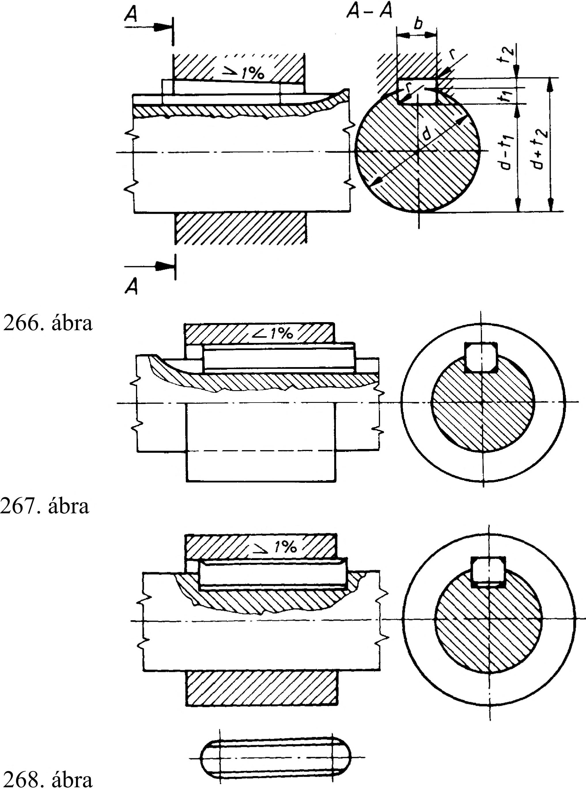

15. Ékek, ékkötések 15. Ékek, ékkötések Az ékkötéseknél a tengely és az agy felfekvő felületei közötti nyomást a felületeket összefeszítő ék hozza létre (264. ábra). 15.1. Ékek A szabványos ékek lejtése 1:100. Az ékkötések befeszítése általában az ékek hosszirányú beütésével történik. Ennek megkönnyítésére az ékeket gyakran alakítják ki orvos ékként. Ha kevés a hely, az ékkötés úgy is befeszíthető, hogy a végein zárt tengelyhoronyba helyezett fészkesékre az agyat feszítik rá. Az ékek szélességi méretének tűrése h9, a horonyszélesség tűrése pedig mind a tengelyben, mind az agyban D10, így az oldalfelületek megfelelő játékkal illeszkednek (265. ábra). A tengelyen a hornyokat ujj- vagy tárcsamaróval készítik, az agyban véséssel. Az ékek használatakor fellépő sugár irányú feszítés nemcsak a forgatónyomaték átvitelét biztosítja, hanem az agy tengely irányú elmozdulását is meggátolja Az ékek fajtáit, alakját és szabványos méreteit az 19. táblázat tartalmazza. 264. ábra 265. ábra 15.2. Ékkötések és ábrázolásuk A szabványos ék 1. alak -orvos, 2. alak -fészkes, 3. alak hornyos és a 4. alak -félhornyos ipari gyakorlati megnevezéssel ismert. Az ékkötések kialakításához szükséges ékhorony méreteit és tűréseit a 20. táblázat tartalmazza. A tárcsamaróval készített ékhorony alkalmazását az 266. ábra mutatja, melyet a hornyos ékkötésnél alkalmaznak, míg a fészkes ékkötés fészkét ujj maróval készítik. A hornyos ékkötés rajzát az 267. ábrán, a fészkes ékkötés rajzát a 268. ábrán láthatjuk. AutoCAD programmal 3D ábrázolással készített szilárdtest. Az érintős ékkötést nagy megterhelés és lökésszerűen fellépő erők, valamint váltakozó irányú forgatónyomaték esetén alkalmazzuk. Legtöbbször 120°-os elrendezésben szereljük be mindkét ékpárt a tengelyhez érintőlegesen. Az ékek lejtős felületekkel fekszenek fel egymáson, míg a külső párhuzamos lapok a tengely, ill. az agy megfelelő sík felületére támaszkodnak. Az érintős ékkötés rajzát a 269. ábra mutatja. 269. ábra 75
